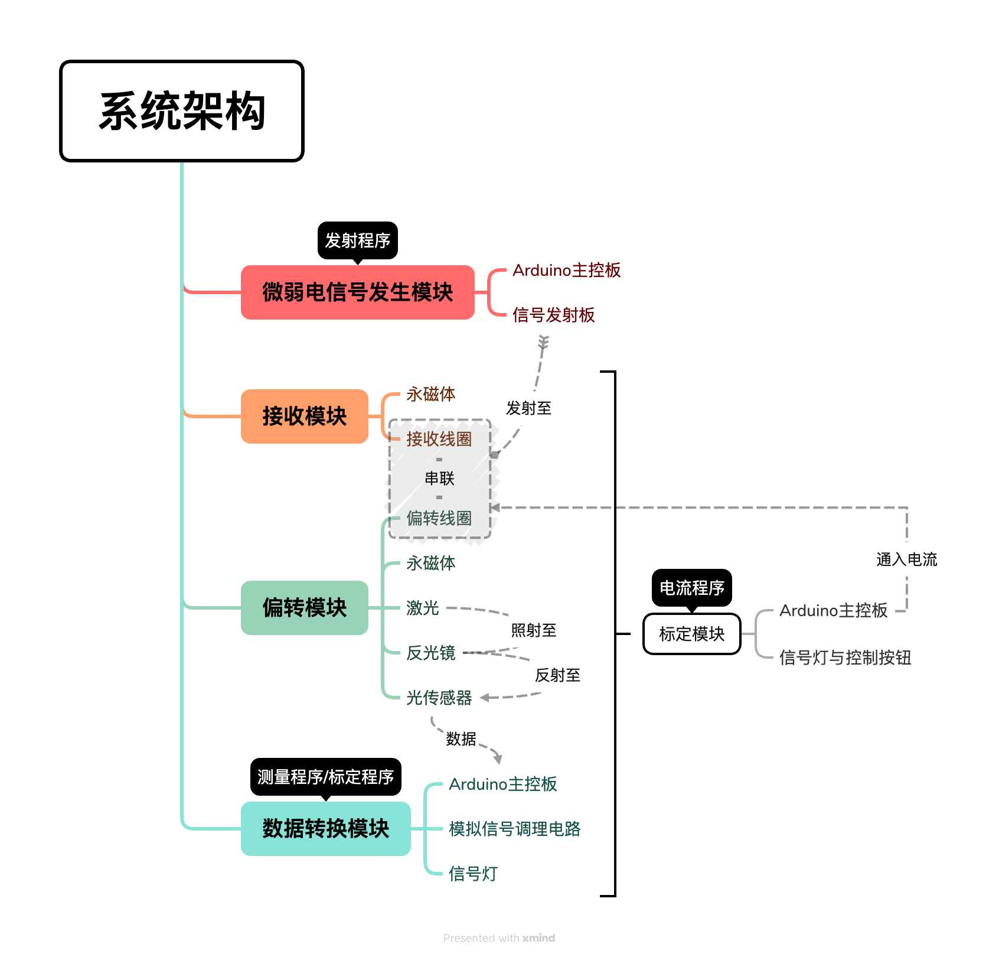
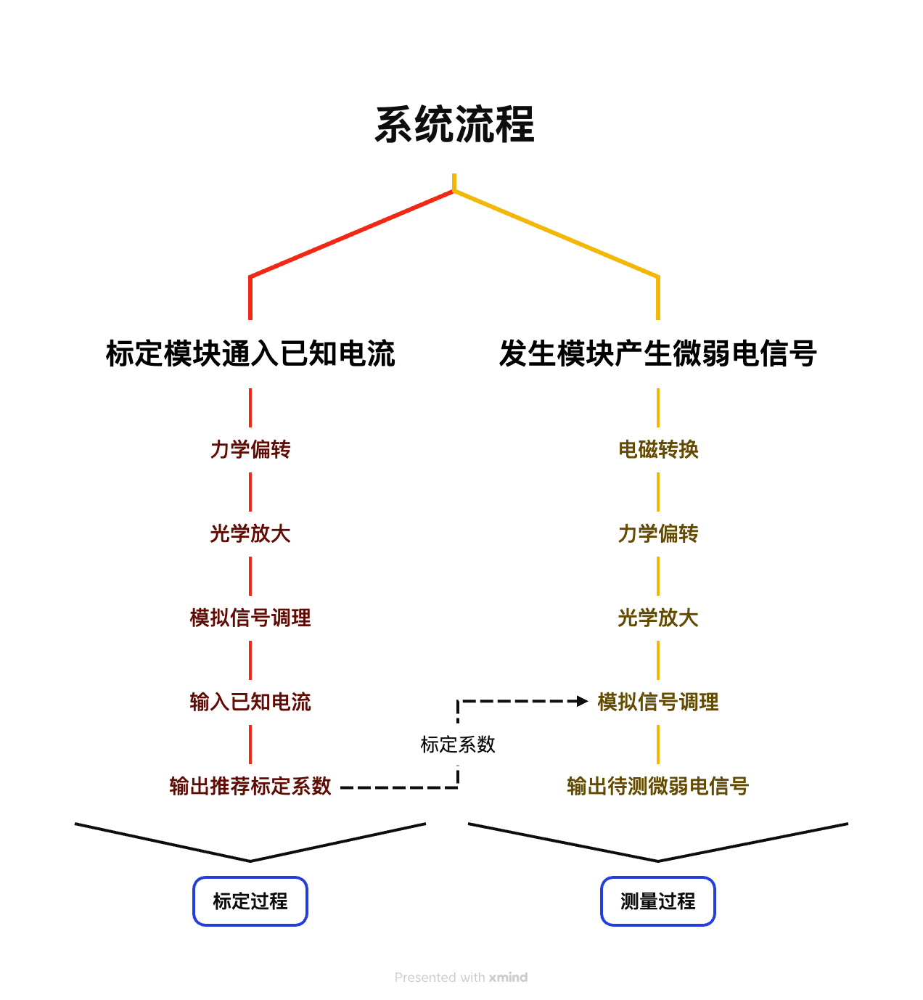
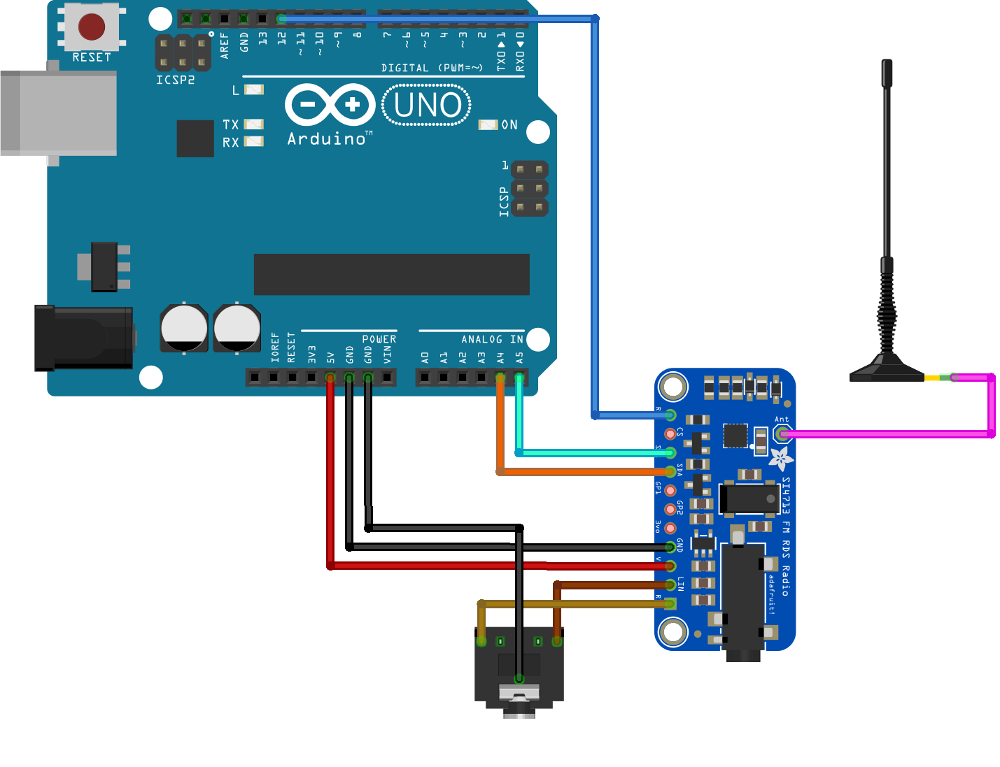
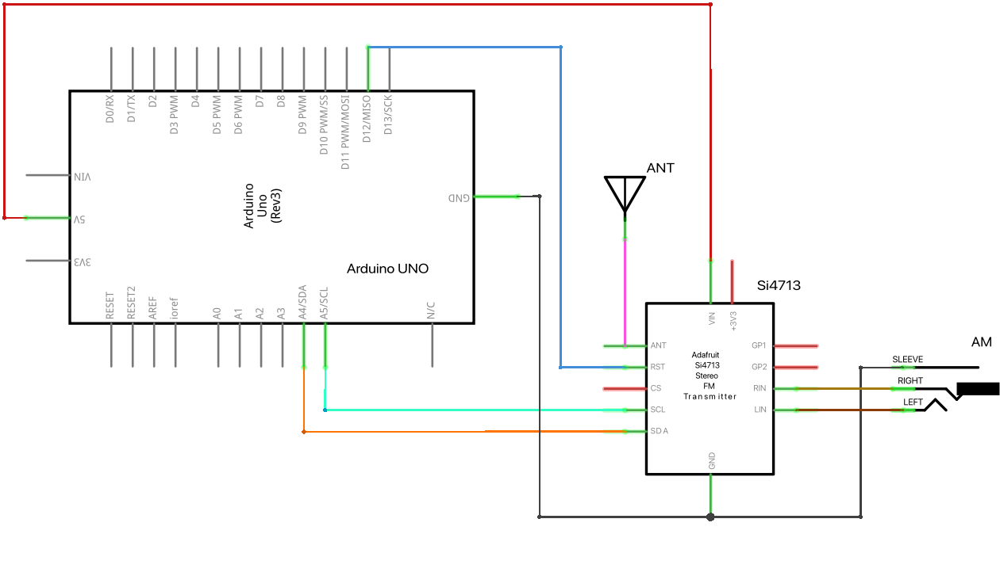
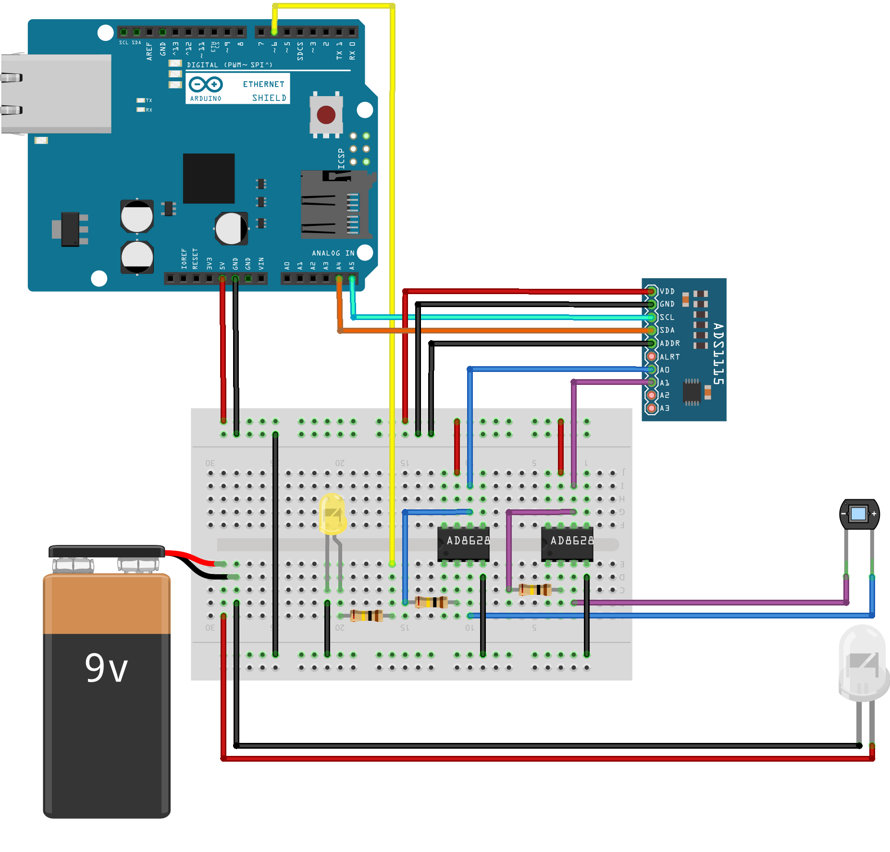
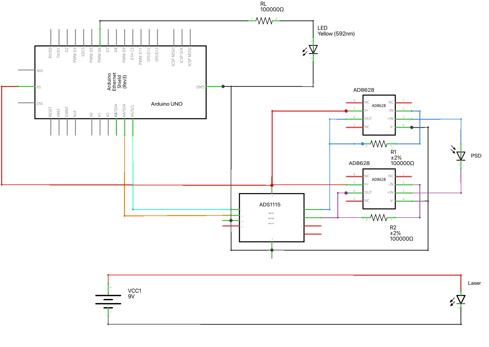
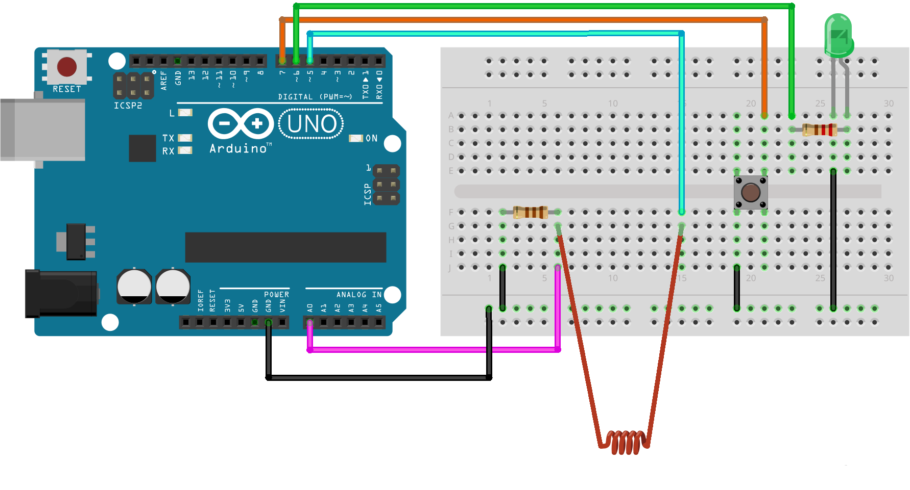
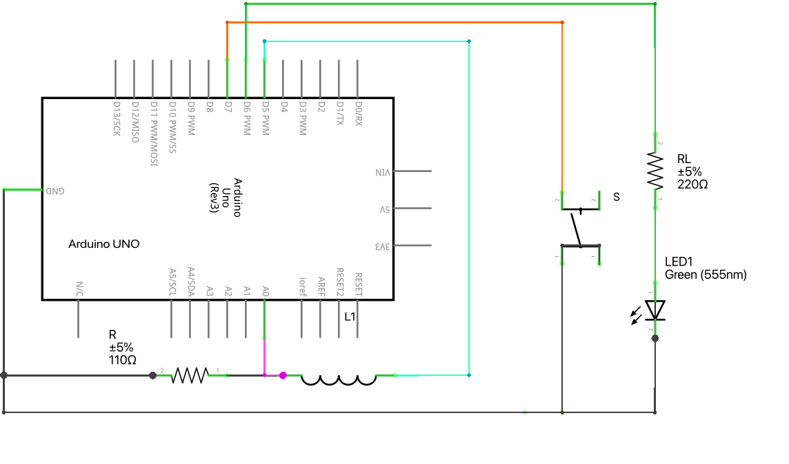

微弱电信号发生模块
Si4713 射频发射芯片配合计算机音频调制源（100Hz 正弦波），构造可控微弱场源。
Design & Implementation of a Weak Electrical Signal Measurement System Based on Optical Lever Amplification
针对微安级及更弱电信号直接电放大易受前端噪声淹没的问题，构建“电磁感应 → 机械偏转 → 光学放大 → 数字处理”的多级物理转换链路，实现从物理量到量化数字输出的完整测量、标定与误差分析。
以物理级联转换代替纯粹电子高倍增益放大，从原理层面隔离前端运放偏置与工频噪声瓶颈。
针对微弱电信号幅值低、易受噪声影响且难以直接测量的问题，本文设计了一套基于光杠杆转换放大的微弱电信号测量系统。系统通过接收线圈获取外部微弱电磁信号，利用载流线圈在恒定磁场中的电磁作用，将感应电流变化转换为机械偏转响应，并结合光杠杆结构与 PSD 传感器实现微小角位移的光学放大检测。通过信号调理、模数转换和嵌入式数据处理实现信号采集与量化分析，同时利用专用标定模块建立输入电流与 PSD 输出之间的对应关系。本文对系统结构、工作原理及误差来源进行了分析，并提出实验验证方案。
以物理级联放大突破微弱信号测量中的前置电子噪声限制。
微安乃至更低量级的电信号容易被环境电磁与热噪声淹没；若单纯依赖电子放大器提高增益，前端自身噪声与失调也会被同步放大。本系统先借助电磁、机械与光学链路完成高信噪比的物理位移转换，再由高精度 ADC 执行数字化采集：微小感应电流首先驱使悬吊线圈产生机械偏转，光杠杆随即把微小角位移几何放大为易检的光斑偏移。
下文依次说明系统总体结构、各功能模块硬件与软件实现、分级最小二乘标定、误差来源与不确定度评估、典型应用场景以及未来优化方向。
长方体电磁屏蔽框架配合四大功能模块，点击下方任意原理图可进入大图浏览模式。
装置以长方体支撑框架为基础，采用模块化结构划分为四大单元：框架左侧布置悬吊式偏转结构，右侧布置激光光源、一维 PSD 传感及高精度数据处理电路。其中信号接收模块与偏转模块由同一根连续铜线一体绕制而成（一体化线圈结构），省去焊点接触电阻与连接损耗；全装置设电磁屏蔽措施，数据处理板配备金属屏蔽罩以抑制空间干扰。


Si4713 射频发射芯片配合计算机音频调制源（100Hz 正弦波），构造可控微弱场源。
多匝一体化接收线圈结合两侧钕铁硼永磁体，遵循法拉第电磁感应产生驱动电流。
悬吊式偏转线圈驱动平面反射镜产生偏转角，通过光杠杆实现光学位移几何放大。
PSD 光敏器件 + AD8628 低噪声调理 + ADS1115 16 位 ADC，交由 Arduino 量化计算。
以计算机声卡高稳定性正弦调制搭配 Si4713 射频芯片，构造幅值与频率精确可控的标准测试信号源。
发生模块由计算机音频输出接口、Arduino 控制单元以及 Si4713 射频发射芯片组成。计算机 Python 脚本（script.py，借助 sounddevice 库输出 100Hz 高纯度正弦波）经 3.5mm 音频口送入 Si4713 的 LIN / RIN 输入端；Arduino 通过 I²C 对 Si4713 完成初始化配置与频率锁定，经片内调制将信号辐射输出。


场电信号 → 电流信号的第一次物理转换，采用一体化连续铜线绕组降低寄生接触损耗。
接收模块采用轻量化、可移动式结构，由多匝绕制接收线圈与两侧磁极相对的钕铁硼强磁铁构成稳定工作磁场环境。当外界微弱交变电信号在空间激励起交变磁通量时，根据法拉第电磁感应定律，线圈闭合回路产生感应电动势与感应电流。
接收线圈与偏转线圈由同一根连续漆包铜线绕制而成（一体化线圈结构），省去分体焊接造成的接触电阻与接触热电动势，显著改善系统对微弱感应电流的灵敏度。
物理放大的核心级联环节：安培力矩驱动悬吊反射镜，配合 2θ 光学杠杆效应将微弱电流放大为厘米级光斑位移。
偏转模块包含两根细铜丝悬吊的偏转线圈、永磁体、同步转动反射镜与外框架。当感应电流 I 流经处于恒定磁场 B 中的 N 匝线圈时，载流线圈受安培力产生转动力矩，与悬丝扭转恢复力矩达成平衡并偏转角度 θ；来自右侧的准直激光投射到镜面后以 2θ 反射角传播距离 D 落在一维 PSD 感光面上。在小角度条件下（θ ≤ 5°），光斑偏移位置 x 与电流 I 呈现良好的线性正比关系：
其中 k 为悬丝等效扭转劲度系数。偏转模块由此把微安量级电流转换并放大为高信噪比的光学位置信号。
利用归一化算子抑制激光功率起伏，配合 AD8628 跨阻调理与 ADS1115 16 位高精度采样反演电流、频率与电动势。
归一化位置算子 P — 采集 PSD 双端光电流输出 Ia、Ib，为消除激光器光强波动与背景环境光偏移引入归一化处理：
信号频率 f 与感应电动势幅值 U — 通过过零检测测定周期并结合 LCR 电桥实测的串联网圈等效阻抗参数求解电动势：
硬件链路围绕一维 PSD 传感器、AD8628 极低偏置电流/低失调电压运放（跨阻 I-V 调理）、ADS1115 16 位高精度 ADC 及 Arduino（环境光背景减除、N=16 滑动平均滤波与过零频率计算）完整落地。


不拆改测试硬件链路，仅切换标定固件即可采集百组样本最小二乘拟合转换系数 C 与零点偏移 b。
在偏转线圈回路中串联精密采样电阻 Rs = 220 Ω 以测算真实电流（I = VR / Rs）。由 Arduino 输出 PWM 驱动使线圈电流分 6 级递增，每级采集 17 组共累计 100 组 (Ii, Pi) 标定数据，片上自动运行最小二乘法求解转换斜率 C 与零点截距 b，并同步打印线性拟合优度 R²。标定完成后仅需切换测量程序而无需变更硬件接线，避免重接线引入额外系统误差。


综合磁电非理想分布、悬丝机械非线性及模拟/ADC 量化噪声构建合成不确定度模型并提出针对性抑制策略。
将装置从电磁场信号延伸至光电管及光电敏感材料微弱光电流定量测试。
将光电管输出直接接入线圈，恒定频率下改变光强观测光斑位移，相比指针检流计显著改善微小电流可读性。
借助可调衰减光源递减输入电流直至逼近背景噪声底，连续采集零输入漂移以定量标定系统有效检测门限。
在恒定光强照射下替换不同待测光电材料，定量横向比对其光生电流响应幅度、瞬态稳定性及温度规律。
客观界定物理杠杆装置在灵敏度、线性动态范围及抗扰环境上的适用边界。
系统通过一体式接收-偏转线圈、光学反射杠杆与一维 PSD 完成了“电 → 机 → 光 → 数”四级联转换架构，并借助软硬件一体化标定构建起定量反演模型，适用于大学物理实验创新与微弱低频电磁信号检测教学实验平台。
收录完整论文 PDF、演示 PPTX、3 套 Fritzing 电路工程、4 份 Arduino 固件源码、Python 信号脚本及所有高清示意图原图（共 21 份文件）。
32 页完整设计论文
全部器材清单与规格参数明细
答辩汇报与项目演示幻灯片
Python sounddevice 100Hz 正弦波发生程序
Si4713 射频发射模块 Fritzing 工程
PSD + AD8628 + ADS1115 Fritzing 工程
PWM 驱动 + 采样电阻检测 Fritzing 工程
Si4713 初始化配置与射频发射控制
PSD 数据采集、环境光补偿与滤波输出
七档 PWM 输出切换与电流测量
分级标定采样与最小二乘拟合求解
可编辑 XMind 源文件
可编辑 XMind 源文件
图 1 原始高分辨率图片
图 2 原始高分辨率图片
发生模块原始接线图片
发生模块原始原理图图片
数据转换模块原始接线图片
数据转换模块原始原理图图片
标定模块原始接线图片
标定模块原始原理图图片